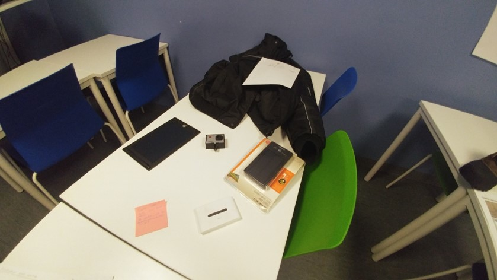

Projektet började i en idégenereringsprocess. Jag kom snabbt på att man skulle kunna använda en jacka för att ha internet i och ladda mobilen ifrån. Jag kom sedan på att man skulle kunna implementera kameror och skärmar för att alltid se vad som händer framför och bakom sig. Där efter gjorde jag en skiss av produkten. Efter tittade jag på vilka saker man kan ha i jackan, t.ex FLIR-kameror, skärm, router och vilket batteri som ska användas. Efter detta gjorde jag mer detaljerade ritningar som visar hur produkten kan se ut i detalj. Det som nu återstår är att tillverka en prototyp.
Här syns jackan på ett öppet hus den 15de januari. De delar som syns är bara till för att representera de saker som kommer att implementeras i produkten.
